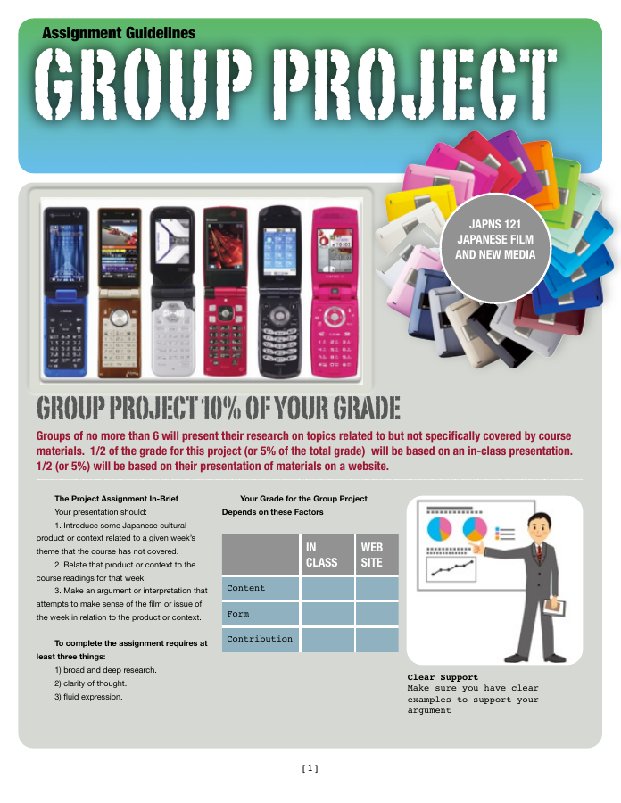
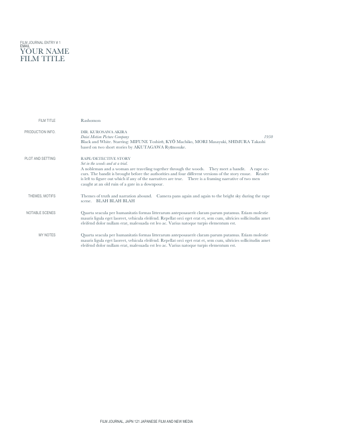

Docs, Events, Links
DownLOAD IMPORTANT DOCUMENTS HERE
Docs, EVENTS, LINKS




Research
Download Film Journal Template here.
Group project guidelines
Experiment #3
Experiment #4


Dr. Abel’s Willard Seminar Group Project Sign-up Sheet
Experiment #1
Experiment #2
Japan Related Flyers: Jobs Clubs Etc


For those who feel like they want to print out a copy of the syllabus here is an old version. But beware! The most up-to-date information is only available on the course webpage. This pdf will not be updated.
1/3/2012